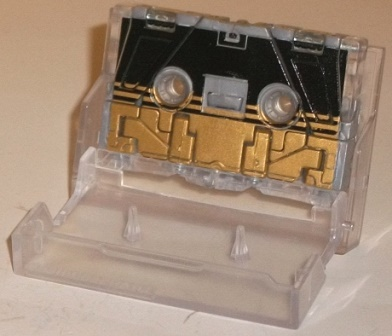 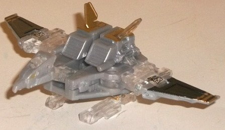
Difficulty of Transformation : Easy
Color Scheme : Light milky gray, clear plastic, and some black, metallic goldish bronze and metallic gold
Individual Rating : 8.2
Set Price
: $180 (U.S.)
Allegiances
: Decepticon
(NOTE: Because this set is composed of repaints,
this is not a full-blown review. This mainly covers any changes made to
the set and the color scheme, and merely compares it to the original versions
of these molds. For a review on the original Masterpiece Soundwave &
Minions set--go
here
.)
 Buzzsaw
Buzzsaw
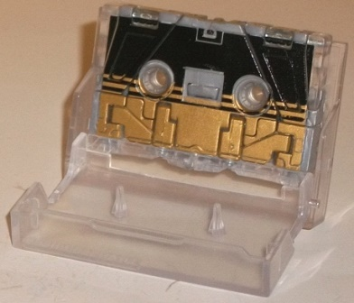
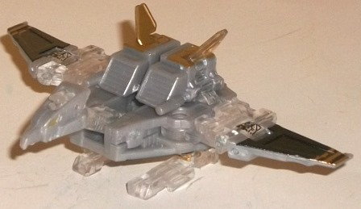
Difficulty of Transformation
: Easy
Color Scheme
: Light milky gray,
clear plastic, and some black, metallic goldish bronze and metallic gold
Individual Rating
: 8.2
Buzzsaw-- like most of
the other toys in this set-- is primarily a light milky gray and clear
plastic. By itself, that's a pretty darned ordinary color scheme-- and
unfortunately, the light milky gray plastic is of that kind that I really
don't like, as it doesn't have a hint of a metallic sheen to it and just
looks blah. The clear plastic is an interesting color used in small bits
like it is, though, even if it's bland-- sort of like Buzzsaw is in the
process of "reformatting" into a new color scheme or something. The black
used on the front of the cassette mode and broken up a bit on his wings
in bird mode is a nice contrast color against all that gray and clear plastic,
and the "stripe" pattern helps Buzzsaw look more interesting in both modes--
the way the stripes are broken up on the ends of the wings looks pretty
good, too, and adds more much-needed contrast to the figure. There's also
two black Decepticon symbols on the sides of his cassette mode/middle of
his bird wings, which are pretty cool "half pure Decepticon symbol/half
Decepticon-shaped Chinese Goat symbol" paint apps, I dig 'em. Buzzsaw also
has a good amount of metallic goldish-copper used for the bottom front
of his cassette mode, though it shows up considerably less in his bird
mode-- only on his wing tips, really. Oddly, there's a seperate more "pure"
shade of metallic gold used for his eyes, which looks nice, but they're
small they doesn't stand out as much as I'd like them to. Thus, overall
he's pretty bland in bird mode, especially when compared to the original
MP Buzzsaw's color scheme. Like with the other cassettes, Buzzsaw comes
with a clear plastic holding case.
No mold changes have
been made to this version of Buzzsaw.
 Frenzy
Frenzy
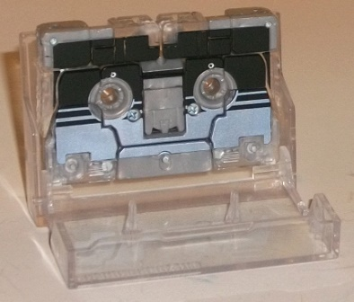
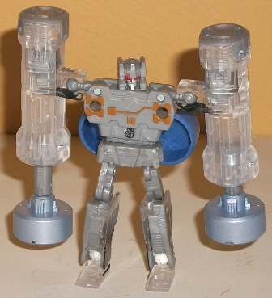
Difficulty of Transformation
: Easy
Color Scheme
: Light milky gray,
clear plastic, and some black, metallic bronze, metallic bluish silver,
light red, silver, and periwinkle
Individual Rating
: 8.1
Just like his fellow
cassettes, Frenzy also has a predominantly light milky gray and clear plastic
color scheme, with most of the clear plastic on Frenzy being used for his
piledriver and gun accessories, with the only bits of clear plastic on
his main body being his feet, halves of his lower legs, and his upper arms.
Again-- a fairly boring color scheme, but luckily Frenzy's cassette mode
has a really nice black-fading-to-metallic-bluish-silver color scheme on
it, with the black fading into the bluish silver via stripes, just like
with Buzzsaw. These cassette mode bits aren't really visible in robot mode,
though, so Frenzy also has a few paint apps in that mode as well-- the
metallic copper detailing on his chest; the light red eyes and silver mouth;
and dark blue stripes on his lower arms. There's also the neat "Decepticon/Goat"
symbol on his stomach. All of these paint apps look pretty nice against
the gray, but unfortunately with the light gray and clear plastic being
so dominant, they just aren't enough to keep Frenzy from still looking
rather bland. His piledrivers have silver paint on the bottom portions,
giving them at least a little bit of paint as well, even if they still
look pretty monochrome. The storage piece for the piledrivers is a nice
periwinkle, and a quite eye-catching shade of it to boot-- I wish said
color had been used a bit more on Frenzy. I realize that this shade is
fairly prevalent on the original release of this guy, but having just a
bit more in the robot mode really would've helped add some more contrast
and color to it.
No mold changes have
been made to this version of Frenzy.
 Laserbeak
Laserbeak
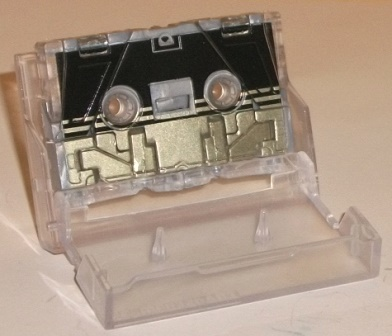
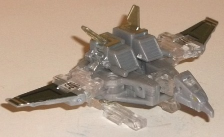
Difficulty of Transformation
: Easy
Color Scheme
: Light milky gray,
clear plastic, and some black, goldish silver, and metallic gold
Individual Rating
: 8.0
There's not really much
to say about Laserbeak that I haven't already said about Buzzsaw, and that's
not merely because they're the same molds-- in fact, they've almost got
the same color schemes. The only way to tell the difference between them
is that, where Buzzsaw has metallic goldish bronze, Laserbeak has silver
with just a tinge of gold to it (less so than it looks in these pics, for
some reason). I like Buzzsaw's goldish bronze better, as it provides a
bit more contrast to the color scheme, particularly in cassette mode. With
Laserbeak, literally his gold eyes are the only parts that aren't monochrome--
because of this, color-wise he looks even more bland and uninteresting
than Buzzsaw.
No mold changes have
been made to this version of Laserbeak.
 Ravage
Ravage
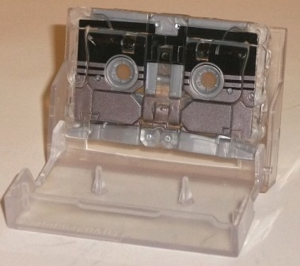
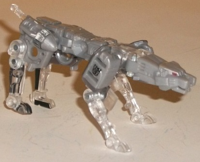
Difficulty of Transformation
: Medium
Color Scheme
: Light milky gray,
clear plastic, and some black, light red, and metallic gunmetal gray
Individual Rating
: 7.9
Ravage is-- surprise!--
mostly light milky gray and clear plastic, just like his fellow Cassette
Minions. The gray mostly makes up the "main body" of his beast mode, with
the transparent plastic making up his limbs and a small section of the
front part of main body and his hips. In cassette mode, he has the same
black striped "fade-to-another-color" pattern, with the other color for
Ravage being a gunmetal gray-- a tad darker in color than the silver on
Laserbeak. In fact, as far as tone, the gunmetal gray is rather close to
Ravage's light gray in most normal light, being just a little darker. In
general, this leaves Ravage with basically nothing but the black from his
cassette mode as a contrast color, which only really shows up in his beast
mode on a bit of his legs. There's also some nice light red for his eyes,
but they don't really add anything to the color scheme. He does have those
neat Decepticon/Goat symbols on his beast shoulders, though, which is a
nice little touch. Unfortunately, overall Ravage is the most boring-looking
out of all the Cassetteicons in this pack.
No mold changes have
been made to this version of Ravage.
 Rumble
Rumble
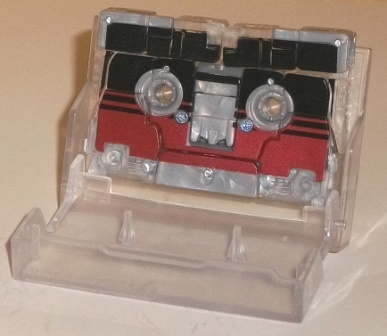
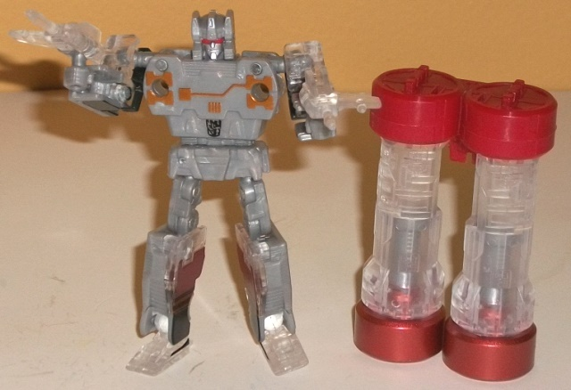
Difficulty of Transformation
: Easy
Color Scheme
: Light milky gray,
clear plastic, and some black, metallic bronze, metallic copper, metallic
reddish copper, light red, red, and silver
Individual Rating
: 8.4
Thought it was hard to
tell which one was Rumble and which one was Frenzy before? Well, get ready
for FIGRIG (Frenzy is Gray, Rumble is Gray)! Yep, in keeping with the rest
of this set, Rumble's primary colors are also light milky gray and clear
plastic-- in fact, he's almost exactly the same as Frenzy, particularly
in robot mode. The only differences with Rumble are that Frenzy's silvery
blue paint apps have been replaced with a nice shade of metallic reddish
copper, the dark blue on the robot forearms with light red, and the bottom
of the piledrivers are a more straightforward shade of metallic copper.
Although I think Rumble's robot mode still looks horribly dull, the various
shades of metallic copper really add some extra zing to his cassette mode
and piledrivers, and the red plastic on his piledriver storage piece pops
a bit better than Frenzy's periwinkle.
No mold changes have
been made to this version of Rumble.
 Soundwave
Soundwave
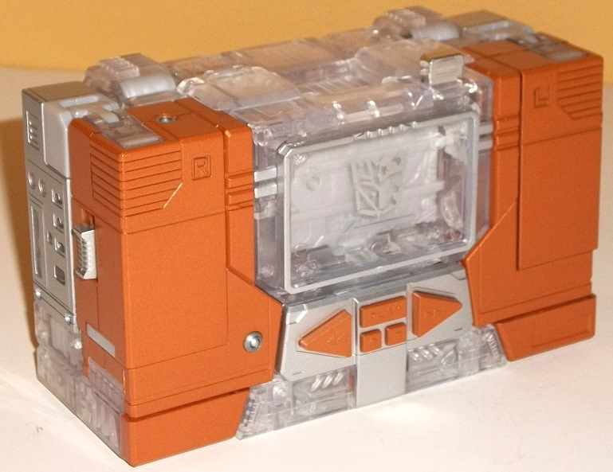
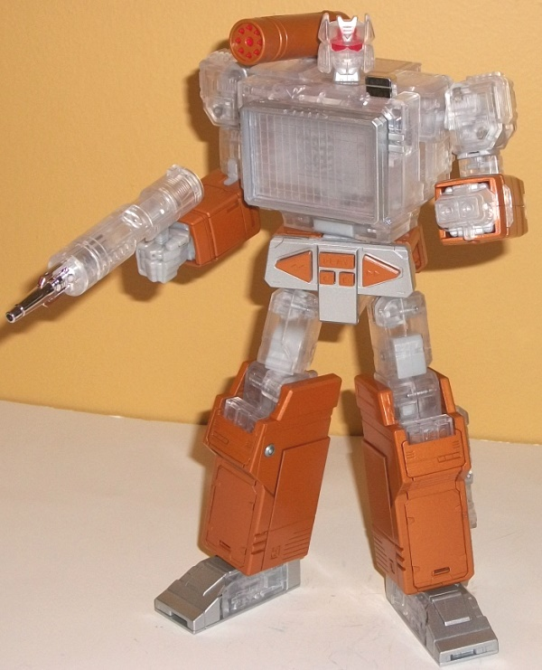
Difficulty of Transformation
: Hard
Color Scheme
: Clear plastic, semi-metallic
bronze, and some chrome silver, silver, light milky gray, and light red
Individual Rating
: 9.3
Soundwave shares the
same general color scheme as the major colors of his Cassette Minions,
but there's significantly more emphasis here on the clear plastic and the
bronze, as opposed to the light gray, which is used pretty much only for
the nylon plastic where clear plastic wouldn't work for mold purposes.
The clear plastic in general actually looks pretty good on Soundwave--
seeing all those molded-in details on both sides of the clear bits looks
pretty good, particularly on places like his cassette deck-chest, upper
legs, and upper arms. His lower legs/front of the cassette player mode,
lower arms, and shoulder-cannon are bronze, but a bit duller, more "brownish"
color of bronze than that found on, say, Rumble. For those worrying that
the bronze might eventually be a victim of Gold Plastic Syndrome and crumble,
don't-- ALL of the bronze on Soundwave is painted, even on pieces that
look at a casual glance like they might be molded in that color. I've also
had no issues with any clear plastic cracking, so no QC issues there, either.
There's a bit of chrome silver on Soundwave's eject button, "headphone
jack", sliders, and gun, which works well with both the clear plastic and
the silver paint on places like Soundwave's crotch and feet/sides of the
cassette player mode. Soundwwave's Decepticon/Goat symbol is in silver
smack dab in the center of his chest, which I would've liked-- had it been
black, like on his Minions. The silver blends in waaaay too well with the
gray background to his innards, and just makes this neato symbol too hard
to see. There's also just a bit of light red, on Soundwave's eyes and at
the tip of his shoulder-cannon. The red on his eyes is particularly curious,
as-- thanks to the clear plastic on his head-- we can see that the whole
piece that includes his eyes is painted red, which actually reaches up
into his forehead. His "CPU", perhaps? Anyways, a neat little oddity. Still,
overall Soundwave's color scheme is only marginally better than his cassettes'--
the considerably more prevalent use of bronze helps give him a bit more
color variety, and the clear plastic helps show some extra molded-in details
in spots, but color-wise he's just entirely too two-tone between the bronze
and clear/gray plastic, and not particularly exciting, especially when
compared to his classic color scheme.
No mold changes have
been made to this version of Soundwave; he comes with all the little extra
accessories that the original Masterpiece Soundwave came with, like the
clear plastic Energon cube, chest "grid" panel, hand-zapper, and little
Megatron gun (Megatron's scope is painted bronze this time around).
The "Year of the Goat" Soundwave & Minions set is generally a set best reserved for A. Huge Soundwave fans/completists or B. Those who absolutely cannot find the regular release of these fantastic molds for a reasonable price, but can find this version on significant discount (as it is at the time of this writing, 7/17). The incredibly steep full price is only for the most hardcore Soundwave enthusiast, particularly since-- without exception-- all of these molds' color schemes are significantly more boring and not as exciting as their original color schemes were.
Reviews by Beastbot